Base ac65d6e. Actual 1440x900 production captures, balanced graphics. Original lighting, shadows, reflections and fog retained. Separate real-time runs have small timing differences. Purgatory retains its warm horizon fog.
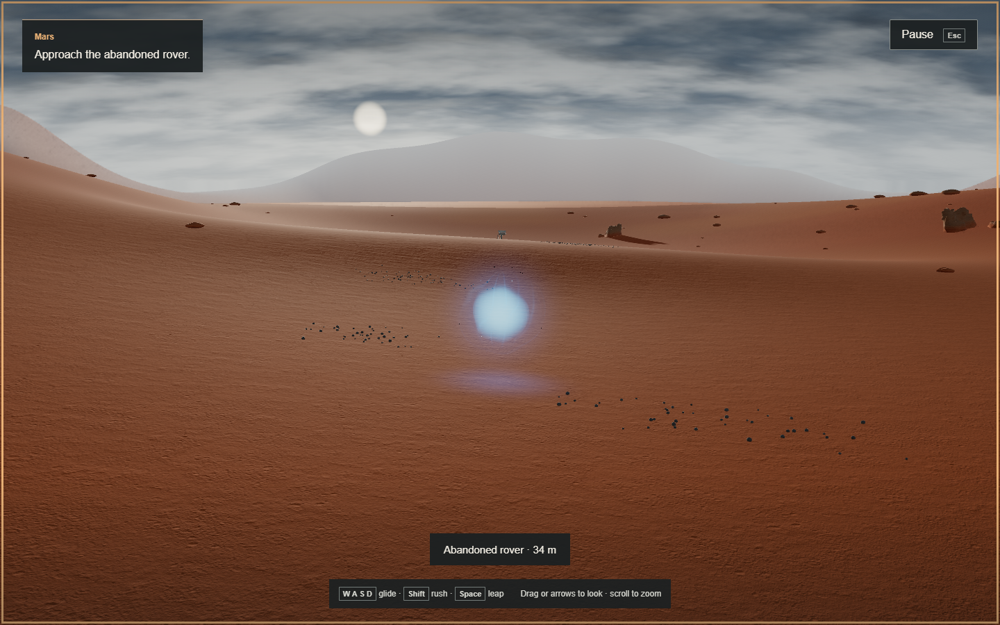
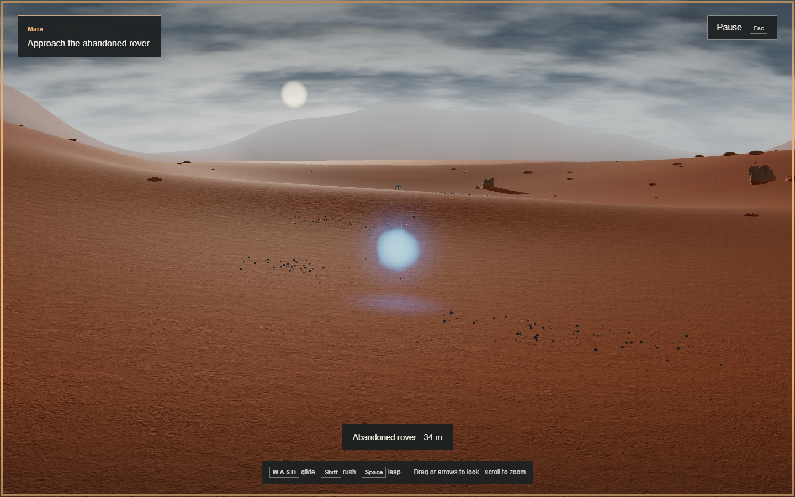
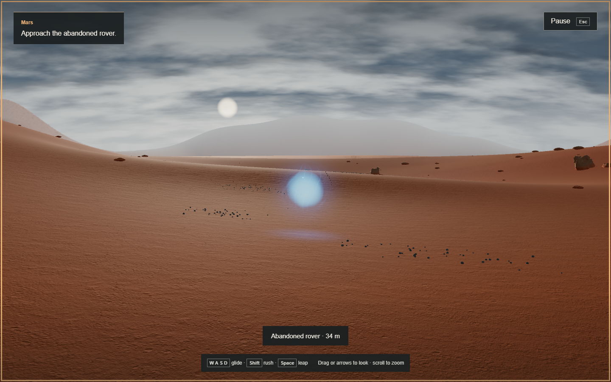
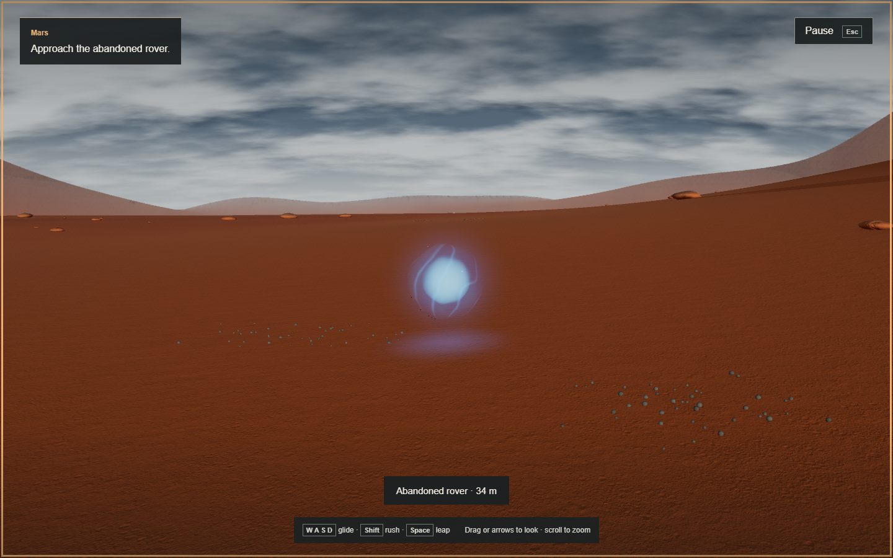
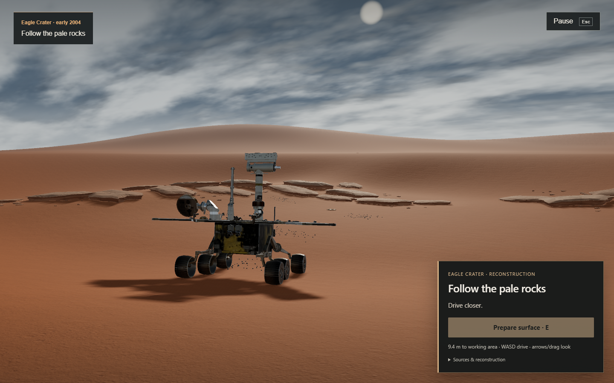
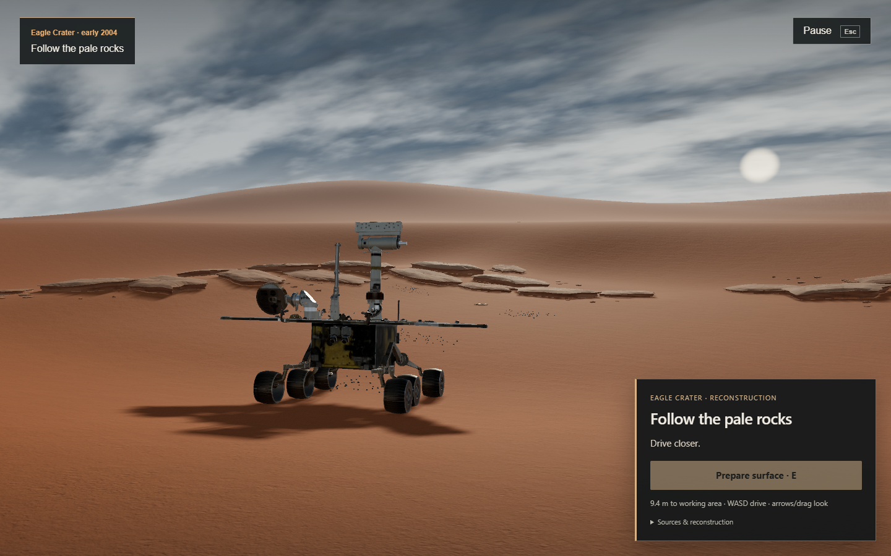
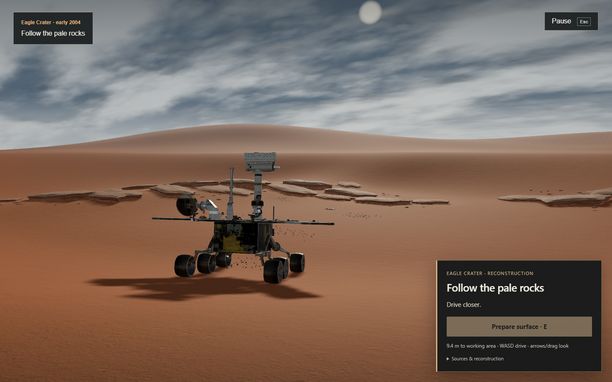
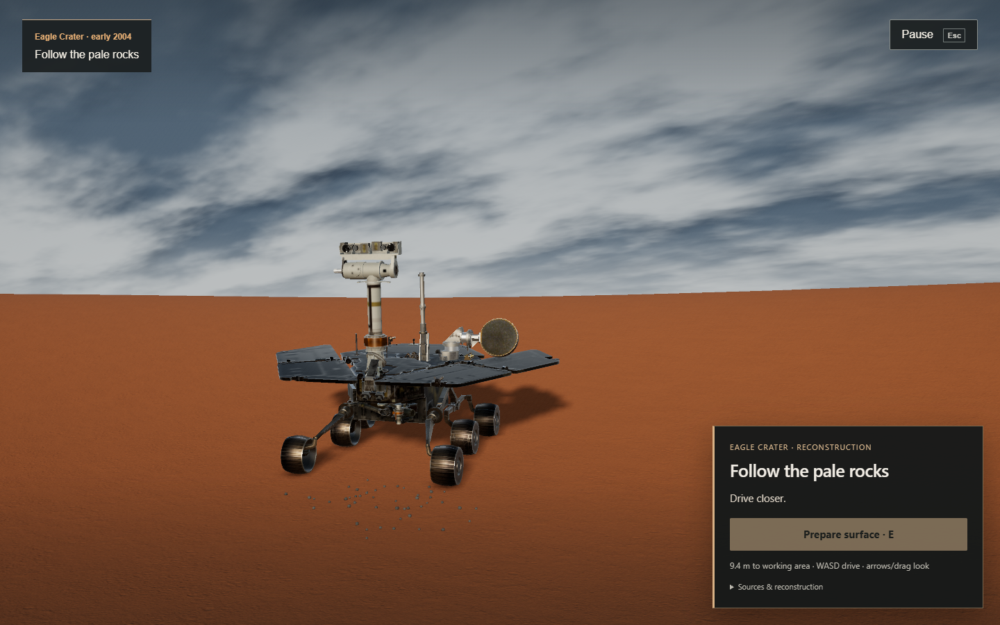
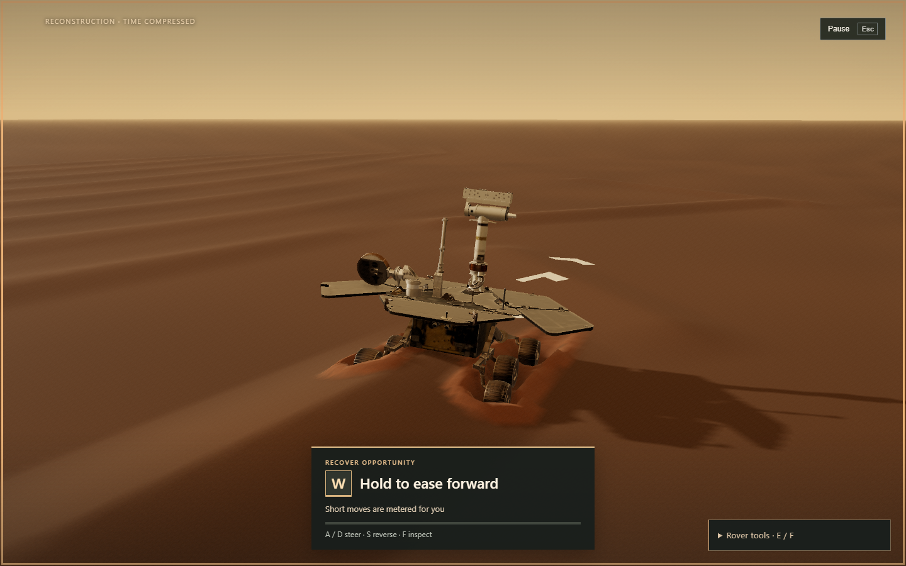
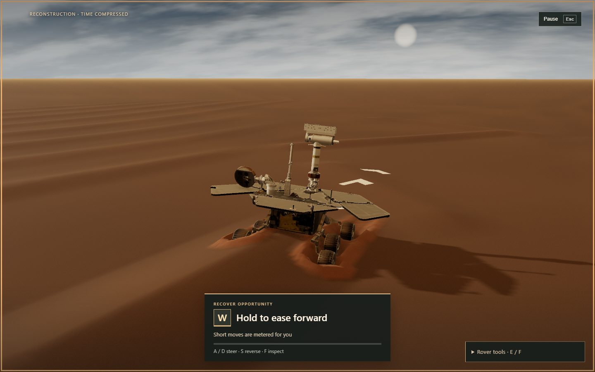
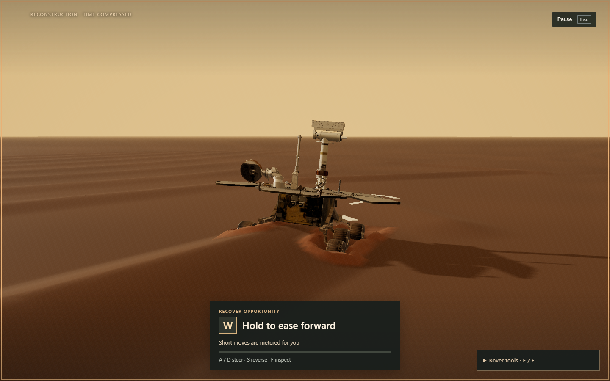
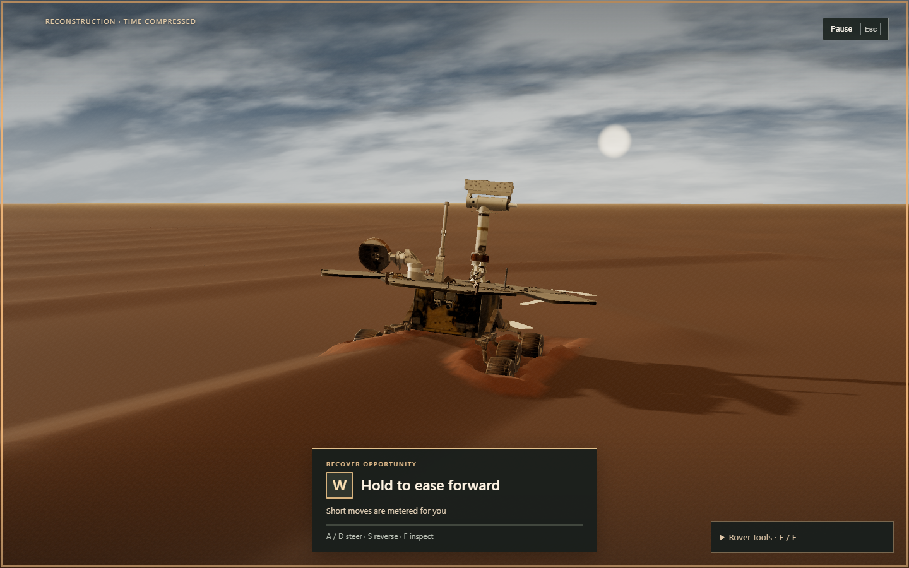
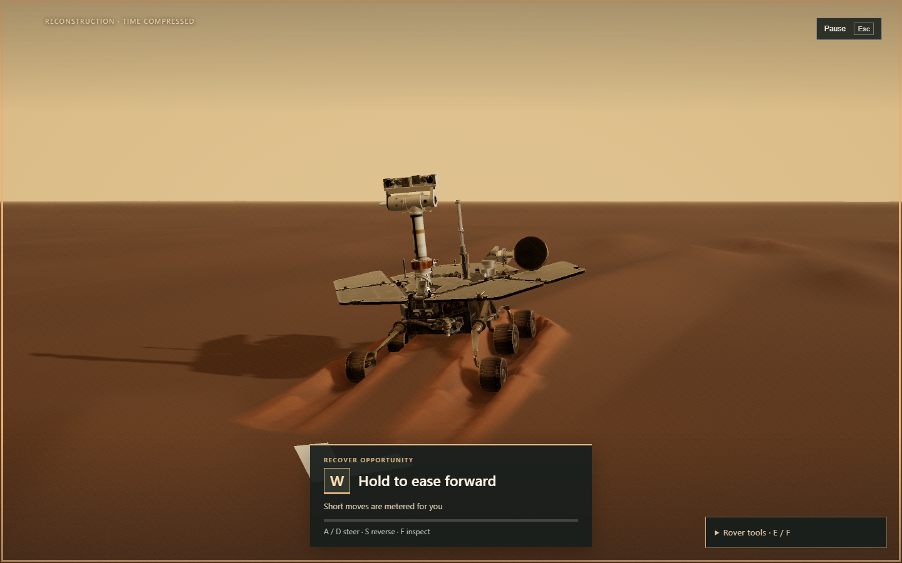
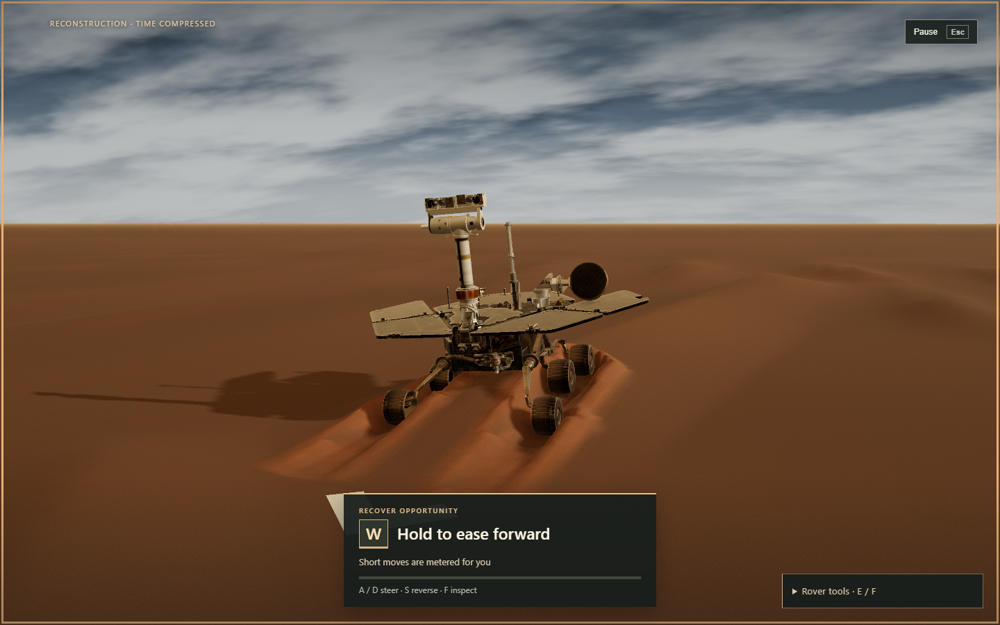